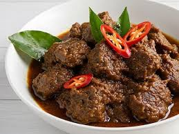

Rendang

Bahan-bahan:
-
1 kg daging sapi (bagian paha/gandik, potong dadu besar)
-
2 liter santan (dari 3 butir kelapa tua)
-
3 batang serai (geprek)
-
4 lembar daun jeruk
-
3 lembar daun salam
-
2 lembar daun kunyit (ikat simpul)
-
100 ml minyak goreng
-
Garam dan gula merah secukupnya
Bumbu Halus:
-
15 siung bawang merah + 8 siung bawang putih
-
20 biji cabe merah keriting + 10 biji cabe rawit merah (sesuai selera)
-
5 butir kemiri (sangrai)
-
5 cm jahe + 5 cm lengkuas + 3 cm kunyit
-
1 sdt ketumbar bubuk + ½ sdt jintan bubuk + ½ sdt pala bubuk
Cara Masak:
-
Panaskan minyak, tumis bumbu halus bersama serai, daun jeruk, daun salam, dan daun kunyit hingga harum dan matang (warna berubah pekat).
-
Masukkan potongan daging sapi, aduk sampai berubah warna dan keluar minyak dari bumbu.
-
Tuang santan sedikit demi sedikit sambil terus diaduk agar santan tidak pecah.
-
Masak dengan api kecil sambil sesekali diaduk. Biarkan santan menyusut dan daging empuk (sekitar 2-3 jam).
-
Setelah kuah mengental dan berwarna coklat kehitaman (rendang), tambahkan garam dan gula merah. Koreksi rasa, lalu sajikan.
kembali